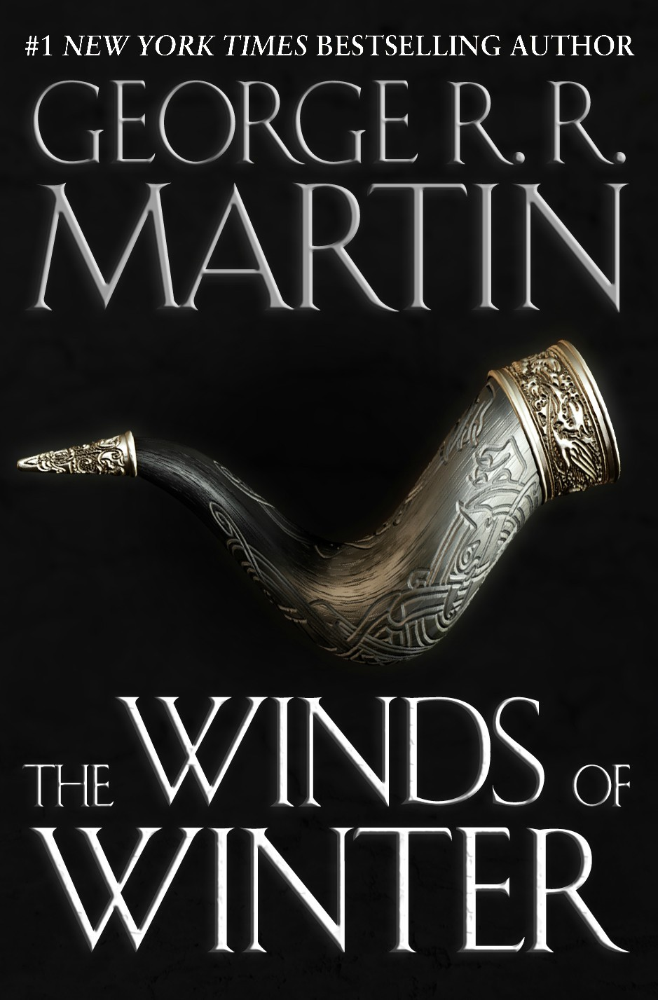
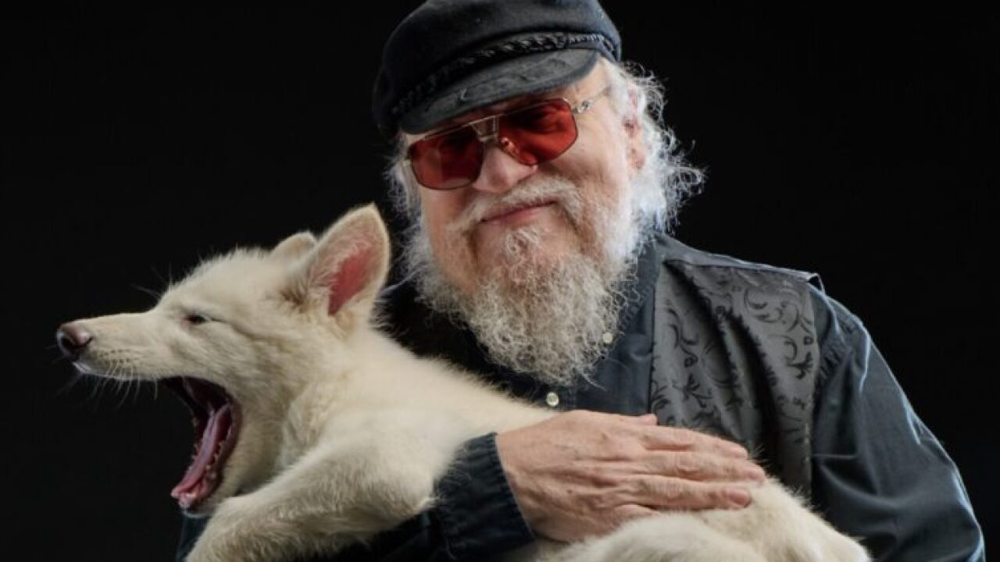

His most recent 2025 interview with Time Magazine
“There’s no doubt that Winds of Winter is 13 years late. I’m still working on it. I have periods where I make progress, and then other things divert my attention, and suddenly I have a deadline for one of the HBO shows, I have something else to do. But the two things are not connected. I open a bookstore, and people say, “Why is George R.R. Martin opening a bookstore? He could be writing Winds of Winter.” I don’t actually work in the bookstore. I own it. I hired people to do it. If you go into the bookstore, yes, a lot of my books are there, which I’ve signed, and a lot of books by other people. I’m not going to ring up your register. I have a theatre. I’m not the projectionist. They seem to overestimate how much time I’m putting into these things. I own stocks and bonds too. I don’t attend the shareholders meetings. I’m not on the board of directors. I’ve invested in something, and sometimes the stock goes up and I make money, and sometimes it’s like now, and suddenly I lose a lot of money. But it’s not me running it. You’ve heard exactly what role I played in the Dire Wolf thing. I’m sitting at home, I might’ve been working on Winds of Winter, and suddenly, Peter Jackson is on the line. […] It did not seriously impinge on the writing of Winds of Winter. But people make it seem, my more fanatic fans, as if it’s one or the other, and it’s not.”

Born 1948 in Nayonne, NJ
Married to Parris McBride but was previously married to Gale Burnick from 1975 to 1979
Graduated from Northwestern in 1970
Meeting the First Direwolves in 10,000 years

Co-wrote "Ergodic Lagrangian dynamics in a superhero universe" for the American Journal of Physics
Read the paper!